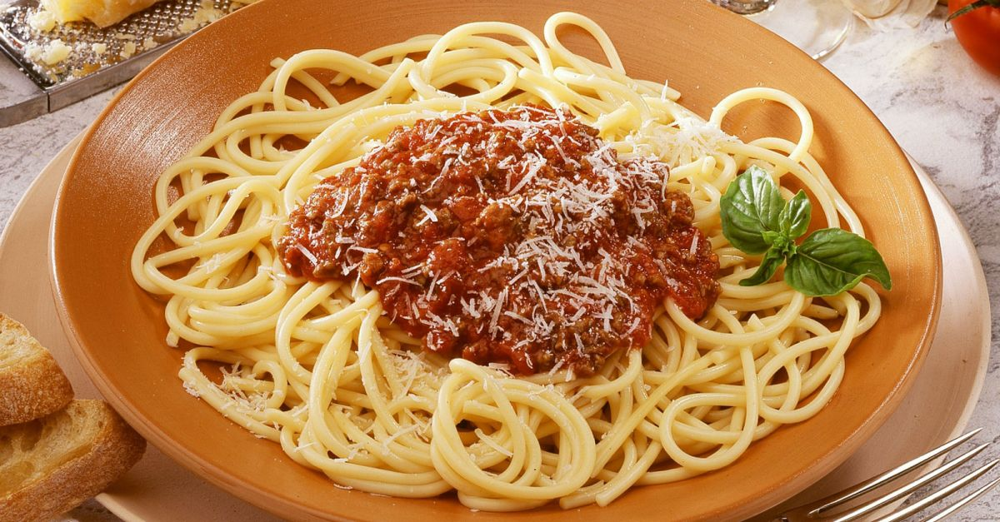

Spaghetti Bolognese

Description
This page has the recipe for cooking Spaghetti Bolognese, which is a pasta dish with beef mince in tomato sauce.
Ingredients
- 250g Spaghetti
- 500g beef mince
- Can of chopped tomatoes
- One chopped onion
- Garlic
- Italian herbs
Steps
- Add the garlic to a hot frying pan for one minute, then add the mince and brown
- Once browned, add the italian herbs and onion to the frying pan for a few minutes, followed by the chopped tomatoes
- Once bubbling reduce the heat to a simmer
- Cook the spaghetti as per instructions (put on some garlic bread if it takes your fancy)
- Once the pasta is cooked take the Bolognese sauce off the heat and dish up